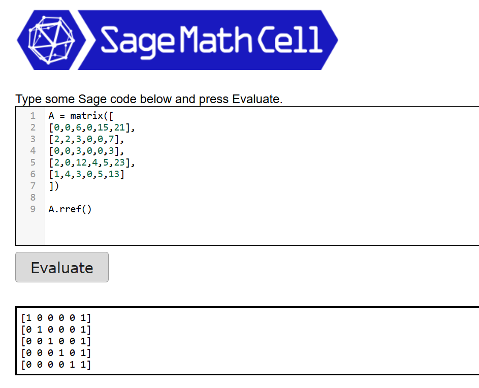

Sistem Persamaan Linear#
Soal#
Diberikan sistem persamaan linear dengan lima variabel berikut:
Matriks Augmented#
Sistem persamaan di atas dapat dituliskan dalam bentuk matriks augmented sebagai berikut:
Eliminasi Gaussian#
Langkah 1: Menentukan pivot pertama#
Elemen pada baris pertama kolom pertama bernilai 0 sehingga tidak dapat dijadikan pivot. Oleh karena itu baris pertama ditukar dengan baris kedua.
Operasi baris:
Matriks menjadi:
Penjelasan:
Pivot pertama dicari pada kolom 1.
Baris pertama memiliki nilai 0, sehingga tidak bisa dijadikan pivot.
Baris kedua memiliki nilai 2, sehingga baris pertama dan baris kedua ditukar.
Langkah 2: Nolkan elemen di bawah pivot kolom 1#
Pivot berada pada kolom 1 baris 1 (angka 2). Selanjutnya kita membuat elemen di bawahnya menjadi 0.
Operasi baris:
Matriks menjadi:
Penjelasan:
Pivot pertama berada pada kolom 1 baris 1 dengan nilai 2.
Pada baris 4 kolom 1 terdapat angka 2 sehingga harus dinolkan.
Nilai tersebut dinolkan dengan mengurangi baris 4 dengan baris 1.
Pada baris 5 kolom 1 terdapat angka 1, sehingga dinolkan dengan mengurangi setengah dari baris 1.
Langkah 3: Menentukan pivot kolom 2#
Karena elemen pada baris 2 kolom 2 = 0, maka kita menukar baris kedua dengan baris kelima.
Operasi baris:
Matriks menjadi:
Penjelasan:
Pivot kedua harus berada pada kolom 2.
Elemen pada baris 2 kolom 2 bernilai 0, sehingga tidak bisa dijadikan pivot.
Pada baris 5 kolom 2 terdapat angka 3, sehingga baris kedua ditukar dengan baris kelima.
Langkah 4: Nolkan elemen di bawah pivot kolom 2#
Pivot kedua berada pada baris 2 kolom 2 (nilai 3).
Operasi baris:
Matriks menjadi:
Penjelasan:
Pivot kedua berada pada baris 2 kolom 2.
Di bawah pivot terdapat angka -2 pada baris 4 kolom 2.
Untuk menolkan angka tersebut kita menambahkan 2/3 kali baris 2 ke baris 4.
Langkah 5: Nolkan elemen di bawah pivot kolom 3#
Pivot ketiga berada pada baris 3 kolom 3 (angka 3).
Operasi baris:
Matriks menjadi:
Penjelasan:
Pivot ketiga berada pada baris 3 kolom 3.
Di bawah pivot terdapat angka 10 pada baris 4 dan 6 pada baris 5.
Kedua elemen tersebut dinolkan dengan mengurangi kelipatan dari baris 3.
Hasil Penyelesaian#
Dari baris terakhir diperoleh:
sehingga
Kemudian dilakukan substitusi ke atas sehingga diperoleh:
Sage cell#
